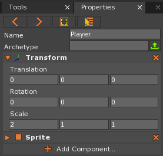
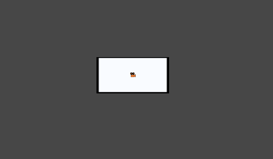
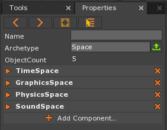
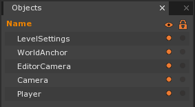
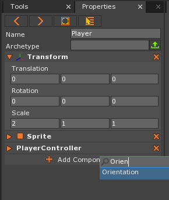
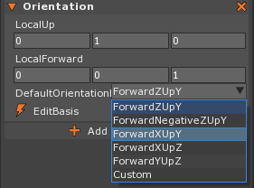
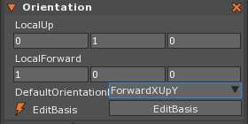
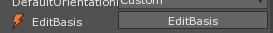
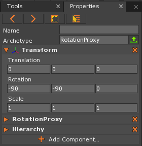
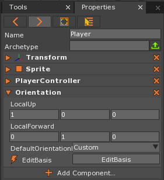

Scripting Events
This lesson covers Spaces, Game Loops, Events, Input, basic Movement, and the Orientation component. It covers the language concepts of parameters and types.
Create a New Project
Level Setup
Command :
CreateSpriteorIn the Properties Window
Set name to: Player
Under Transform
Set Scale to: [2, 1, 1]

Here is what the level should look like:

Spaces
A space is an object that represents a group of objects. Spaces in the Zero Engine are containers for game objects. When a level is loaded, all the game objects from that level are put into a space. In a simple game you only have one space, which is where all your game objects go. Each space has its own instances of the core systems of the engine: graphics, physics, etc. Because of this, game objects in two different spaces will not collide or otherwise physically interact. Creating a separate space for UI game objects is one of the most common uses of multiple spaces in a game.
- Click anywhere in the Level Window
- Press
Shift+Sor to bring up the properties of the current Space
Notice that the Property Window shows the space that all the objects in this level are contained in. You should see that the object count is 5 because there are 5 objects in the level:
 
Game Loops
In all games, there is a continuous element to the game play. Consider The Sims for a moment. The game continuously checks for player input, moves characters across the screen over several seconds, queues actions such as cleaning and eating to be done at the appropriate time, and more.
Using this example, you can break The Sims down into what is known in the games industry as a series of frames. Think of a single frame as one picture on a reel of film. When you string each of these frames together and play them back at a specific rate, you can see the movie that is on the film.
Much of the same idea applies to games. In our frames example, one frame consists of several common actions that are executed in a specific sequence. For instance, the game would first check for user input, then it would update the game logic that governs moving the characters, and finally, it would then draw that frame to the screen.
If this process of executing one frame of a game is looped at a specific rate, much like the film, the game comes alive and becomes real-time. This is precisely the concept of the game loop, where it loops the process of executing one frame of the game over and over again. It should be noted that in most games, as well as the Zero Engine, the game loop repeats at a rate of 60 frames per second. This is called the frame rate.
Basically, before drawing to the screen, the game engine’s systems perform several tasks such as: detecting user input, performing physics calculations, and handling game logic. These systems communicate with each other through the use of events.
Events
Events are the main way that objects and components talk to each other in the Zero Engine. Events can be dispatched on any object. The two most common objects used with events are the owner and the Space. The listener needs to know for each event whether it will come through the object or the space, or it won’t be able to receive the event. Events sent to a specific object won’t be heard by any other object even if they’re listening for it. Events dispatched to the entire Space will be heard by every object in the Space that’s listening for it.
Adding the PlayerController ZilchScript
Add a new ZilchScript resource Named: ‘PlayerController’
class PlayerController : ZilchComponent
{
// This function is called when the object is created
function Initialize(init : CogInitializer)
{
// Say hello:
Console.WriteLine("Hello from Player");
}
function OnLogicUpdate(event : UpdateEvent)
{
}
}
The LogicUpdate Event
When a space begins handling game logic, it dispatches an event to all the game objects it contains. That event is known as the LogicUpdate event. We want to have logic to update our Player object every frame so that we can always be checking if the user has provided input from either the keyboard, a mouse, or a controller. Then we are able to write code that moves the player when a certain key is pressed. This code will be written in a “CallBack” function that we will define:
- Open the PlayerController script
In the generated code you’ll see a function called OnLogicUpdate that accepts an event named: UpdateEvent
- In the OnLogicUpdate function, add the single statement printing “updated” to the console:
function OnLogicUpdate(event : UpdateEvent)
{
Console.WriteLine("updated");
}
Every time our OnLogicUpdate function gets called, it will print “updated” to the Console Window.
In the Properties Window
This should be the output in the Console Window:
Console Output:
---------------- Begin Game ----------------
Compiling Zilch Library
Hello from Player
Level 'Level' was loaded.
Loaded level 0.00s
It looks like the word “updated” did not get printed at all in the Console Window. This is because we forgot to ‘’Connect’’ to the event.
Connecting to LogicUpdate
Remember that events are how the engine/objects/spaces inform you that something has happened and lets you decide what to do. When you want to respond to an event you need to connect to it. You connect a specific event that happens to a specific object to a function you’ve defined.
For example, lets say you connect your function, ApplyChanges() to the OKButton object’s ButtonUp event. When the user clicks the OKButton the ButtonUp event will be dispatched. Since you are listening for this event when dispatched to the OKButton, the function you connected to, ApplyChanges(), will be called.
It’s important to connect them correctly, so you don’t have your function called when you press the cancel button (wrong object) or when hovering over the button (wrong event).
We want to connect to our space which is dispatching the LogicUpdate event. We will have our OnLogicUpdate function called when we receive the event. To do this we will use the Zero.Connect function.
In your PlayerController script
- Replace the code in the Initialize function with the following code:
function Initialize(init : CogInitializer) { // Connect to the LogicUpdate event fired by the space: // when the space gets a LogicUpdate event call my OnLogicUpdate function Zero.Connect(this.Space, Events.LogicUpdate, this.OnLogicUpdate); }
We now know that our OnLogicUpdate function is being called because the word “updated” is repeatedly being printed in the Console Window:
Console Output:
updated
updated
updated
updated
updated
updated
updated
updated
updated
updated
Events send different event types. The LogicUpdate event sends an UpdateEvent which contains how much time has passed in the space (TimePassed) and the change in time from the previous frame to this frame (denoted by Dt to represent delta time) in seconds.
- Stop the Game if it is currently open
- Open the PlayerController script
- Replace the code in the OnLogicUpdate function with the following code:
function OnLogicUpdate(event : UpdateEvent)
{
Console.WriteLine("TimePassed: `event.TimePassed`");
Console.WriteLine("Updated with dt of: `event.Dt`");
}
We should see the time passed (in seconds) is increasing by the Dt (delta time) of each frame:
Console Output:
---------------- Begin Game ----------------
Compiling Zilch Library
Hello from Player
Level 'Level' was loaded.
Loaded level 0.00s
TimePassed: 0.0159611
Updated with dt of: 0.0166567
TimePassed: 0.0340954
Updated with dt of: 0.0166567
TimePassed: 0.0510914
Updated with dt of: 0.0166567
TimePassed: 0.068136
Updated with dt of: 0.0166567
TimePassed: 0.0851685
Updated with dt of: 0.0166567
TimePassed: 0.102257
Keyboard Input
Now we will detect keyboard input. In the Zero Engine, we can use the Zero.Keyboard.KeyIsPressed function to detect user input. This function accepts a key id argument that is associated with specific keys on the keyboard.
Let’s detect if the Up arrow key is pressed:
- Stop the Game
- Open the PlayerController script
- Update the OnLogicUpdate function with the following code:
function OnLogicUpdate(event : UpdateEvent)
{
// If I press the up arrow key,
if (Zero.Keyboard.KeyIsPressed(Keys.Up))
{
// print confirmation it happened.
Console.WriteLine("Up Arrow Pressed");
}
}
The Zero.Keyboard.KeyIsPressed function returns a Boolean value. This value can either be true or false; therefore, the function call can be used by the if statement as its boolean condition.
Now when you pressed the Up arrow key on the keyboard, it should print “Up Arrow Pressed” in the Console Window.
Frame-based Movement
Up until now, we have been detecting input from the keyboard and printing to the Console Window. Now we are going to make our Player object move using code in our PlayerController script. We know from setting our properties in the editor that the Transform component is where our Translation (position) is held. Our Translation is stored as a 3D Vector. Now we will update the Translation vector inside the Transform component from within our PlayerController script.
Let’s make our Player move along the positive world y-axis when we press the Up arrow key:
- Open the PlayerController script
- Update the OnLogicUpdate function with the following line of code:
function OnLogicUpdate(event : UpdateEvent)
{
// If I press the up arrow key,
if (Zero.Keyboard.KeyIsPressed(Keys.Up))
{
// print confirmation it happened.
Console.WriteLine("Up Arrow Pressed");
// Move up along world y-axis.
this.Owner.Transform.Translation += local Real3(0.0, 1.0, 0.0);
}
}
With this code, we are adding a 3D vector to our Transform’s 3D translation vector. This should move our object in the positive direction along the world y-axis.
- Save the project and run the game
- Press the Up arrow key repeatedly
Now in addition to printing, the Player object should be moving by 1 unit in the positive direction along the world y-axis. We have been checking for the up arrow key being pressed. Let’s check for if the up arrow key is being held down.
- Stop the Game
- Open the PlayerController script
- In the OnLogicUpdate function, change
KeyIsPressedtoKeyIsDown:
// If I hold down the up arrow key,
if (Zero.Keyboard.KeyIsDown(Keys.Up))
- Save the project and run the game
- Hold the up arrow key down
The Player object continues moving as long as the Up arrow key is held down. Now let’s rotate our player object.
- Stop the Game
- Open the PlayerController script
- change the OnLogicUpdate to the following code:
function OnLogicUpdate(event : UpdateEvent)
{
// Have a place to record the total movement we want to make:
var movement = local Real3(0.0, 0.0, 0.0);
// Have a place to record the rotation we want to perform:
var rotationAngles = local Real3(0.0, 0.0, 0.0);
var rotationAngle = 45.0;
// If I hold down the up arrow key,
if (Zero.Keyboard.KeyIsDown(Keys.Up))
{
// Record desired upward motion along the world y-axis:
movement += local Real3(0.0, 1.0, 0.0);
}
// If I hold down the down arrow key,
if (Zero.Keyboard.KeyIsDown(Keys.Down))
{
// Record desired downward motion along the world y-axis:
movement += local Real3(0.0, -1.0, 0.0);
}
// If I hold down the right arrow key,
if (Zero.Keyboard.KeyIsDown(Keys.Right))
{
// Record desired rotation around the world z-axis:
rotationAngles.Z -= Math.ToRadians(rotationAngle);
}
// If I hold down the left arrow key,
if (Zero.Keyboard.KeyIsDown(Keys.Left))
{
// Record desired rotation around the world z-axis:
rotationAngles.Z += Math.ToRadians(rotationAngle);
}
// Apply the recorded movement and rotation to our Transform
this.Owner.Transform.Translation += movement;
this.Owner.Transform.RotateAnglesWorld(rotationAngle);
}
Here we got an error displayed in our Console Output:
this.Owner.Transform.RotateAnglesWorld(rotationAngle);
The function 'RotateAnglesWorld' exists, but could not be resolved since the types
of the arguements used did not match. The arguements you gave were:
RotateAnglesWorld(Real)
The possible choices were:
RotateAnglesWorld(angles : Real3)
The types of the arguments did not match
Parameters
Arguments or parameters are variables or data you pass to the function. Parameters are the data you put inside the parentheses, (), when calling a function. It allows a function to operate without all the knowledge upfront. In this.Owner.Transform.RotateAnglesWorld() the passing of a parameter to the function allows us to rotate by any 3 angles for each axes, without knowing a head of time which angles we’ll be rotating by.
Therefore, the error has to do with passing rotationAngle into the function this.Owner.Transform.RotateAnglesWorld().
Here we accidentally passed in rotationAngle, a single number or Real, instead of rotationAngles, our 3D vector, or Real3, holding the rotation angles for each axis.
Types
At the very beginnings of computer logic is the ability to change the outcome depending on the current state: ON or OFF. If we represent ON as 1 and OFF as 0 we can string them together to represent more data in a format called binary. Computers interpretation of data, the 1s and 0s, depends on it’s type:
Given 0100100001101001:
Interpreted as a String using the ASCII table the value is:
- Hi
Interpreted as a based 10, decimal number (the way we usually count) the value is:
- 18537
Interpreted as a based 16, hexadecimal number the value is:
- 4869
The ways to use the information is boundless, so the way we ensure we get the results we expect is to denote the type. On your computer this is done with file extensions. It lets the computer know how to read the data file, and choose which program to open it with. This is why computers always ask for confirmation on changing file extensions, reinterpreting the data in a file might result in a nonsensical output. (You can see this by changing a small picture’s file extension to .txt and opening it.)
In the same way, 1s and 0s are used to represent everything in your program. In Zilch, you can explicitly specify your type to make sure your data is interpreted correctly. See the following snippet for an example:
// The colon after our variable name marks that the next word is
// the type we want this variable to be interpreted as.
var movement: Real3 = local Real3(0.0, 0.0, 0.0);
// Without the type explicitly specified, Zilch infers the
// type based on what you assign to it.
var numberOfLives = 6;
Assumptions of the type can be made from assignment of values called literals.
So let’s modify the last two lines of our OnLogicUpdate function so the type matches:
// Apply the recorded movement and rotation to our Transform
this.Owner.Transform.Translation += movement;
this.Owner.Transform.RotateAnglesWorld(rotationAngles);
- Save the project and run the game
- Press the Up, Down, and Right arrow keys to move forward, move back, and rotate clockwise, respectively.
Time-based Movement
So far, we have been doing frame-based movement and rotation. This means that we will get different speeds if we run our game on faster or slower computers. We can avoid these inconsistencies by taking time into account with our movement. Basically, instead of moving a set number of units every frame, we will move a set number of units every second. We do this by multiplying our units by how much time has passed since the previous frame. Let’s update our code to have time-based movement.
- Stop the Game and open the PlayerController script
- Update the OnLogicUpdate function with the following code:
// Make sure the we only get the direction of the vector:
movement = Math.Normalize(movement);
// Apply the recorded movement and rotation to our Transform
this.Owner.Transform.Translation += movement * event.Dt;
this.Owner.Transform.RotateAnglesWorld(rotationAngles * event.Dt);
The Player object should now moving at one unit per second and rotating at 45 degrees per second. Now let’s incorporate speed by making a speed variable:
- Stop the Game
- Open the PlayerController script
- Update the OnLogicUpdate function with the following code:
// Have a place to record the total movement we want to make:
var movement = local Real3(0.0, 0.0, 0.0);
var speed = 10.0;
// Apply the recorded movement and rotation to our Transform
this.Owner.Transform.Translation += movement * event.Dt * speed;
After normalizing our movement vector, which makes it of unit length, we then scale that by 10 to make it 10 units in that direction. This results in a translation of 10 units every second in that direction.
- Save the project and run the game to see that we now have a decent movement speed.
Orientation
Now that we have the basics covered, we will learn how to use the Orientation component to achieve more control over movement. At this point, we can rotate the player object around the world z-axis and move it along the positive and negative world y-axis. What if we wanted to move the object in whatever direction the object was currently “facing”. In other words, what if we wanted to take the object’s orientation into account when applying movement. Objects will be treated as if they have their own coordinate system which we can then use as we see fit. In the Zero Engine, this can be done using an Orientation component, which allows us to define and change our object’s “forward” direction.
Now we will use the Orientation component to move along the Player object’s forward direction so that the Player object will move in the direction it is facing even after we rotate.
- Stop the Game
- Open the PlayerController script
- Update the OnLogicUpdate function with the following code:
// Have a place to record the rotation we want to perform:
var rotationAngles = local Real3(0.0, 0.0, 0.0);
var rotationAngle = 45.0;
// Have a direction that denotes where we are facing:
var forwardDirection = this.Owner.Orientation.WorldForward;
We are getting the Player object’s forward direction vector in relation to its current orientation in the world by using the WorldForward member provided by the Orientation component. Notice that in order to access the Orientation component, we must first start with this (which is this PlayerController class on this script) and then access the Owner object (Player object) that this PlayerController script is attached to. Then from there we can access the components of the Player object. Now we will use the forwardDirection vector variable instead of our hard-coded Real3(0.0,1.0,0.0) and Real3(0.0,-1.0,0.0) vectors which do not take the Player object’s relative coordinates into account.
- Update the OnLogicUpdate function with the following code:
// If I hold down the up arrow key,
if (Zero.Keyboard.KeyIsDown(Keys.Up))
{
// Record desired forward motion along the forward direction:
movement += forwardDirection;
}
// If I hold down the down arrow key,
if (Zero.Keyboard.KeyIsDown(Keys.Down))
{
// Record desired backward motion along the forward direction:
movement += -forwardDirection;
}
Take note that we negate the forward direction by putting the minus sign directly before it. We are adding the negative or opposite forward direction when the Down arrow key is held down.
Uh oh! We got an error. We seem to have made the common mistake of forgetting to actually add the Orientation component.
- Stop the Game
- Select the Player object
- In the Properties Window
- Click the Add Component... area
- Type: Orientation
- Click the Add Component... area

- Select Orientation or press enter to add the Orientation component to the Player object
The player should now have the Orientation component added and listed in the Properties Window:
- In the Properties Window
- Under Orientation
- Set DefaultOrientation to: ForwardXUpY
- Under Orientation
 
Now if you press the Up arrow key, the Player object should move forward along its forward direction. If you rotate the Player object with the Right arrow key, you will see that the Player object’s forward direction remains relative to the Player object’s new rotation.
In the Properties Window
Under Orientation
- Click EditBasis Button

The properties will now reflect the settings for the current basis used for your Orientation component:

- Under Transform
- Set Rotation to: [0, 90, 0]
In the Properties Window you can see the positive y-axis is now the Player object’s local forward direction:

You can also move the Player object along your “right” and “up” directions in the same way that the Player object moves along its “forward” direction with WorldRight and WorldUp, respectively.
| orphan: |
|---|